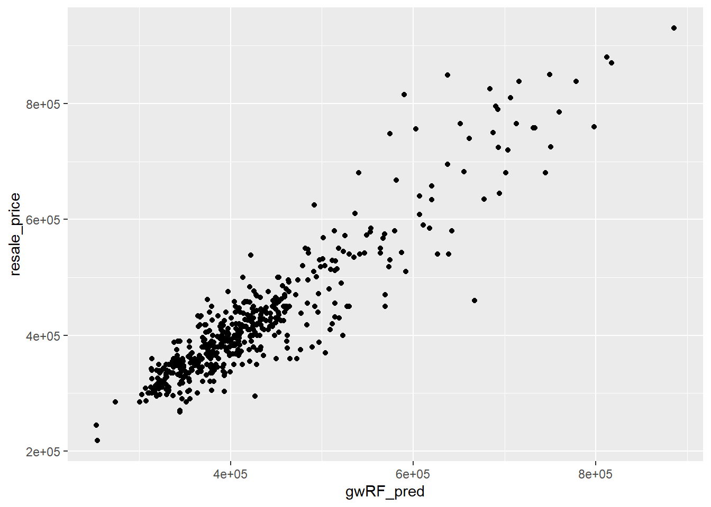

pacman::p_load(sf, spdep, GWmodel, SpatialML,
tmap, rsample, Metrics, tidyverse,
knitr, kableExtra)In-class Exercise 8
1 Getting Started
1.1 Installing and Loading R packages
2 Preparing Data
2.1 Data import
Reading the input data sets. It is in simple feature data frame.
mdata <- read_rds("Data/mdata.rds")2.2 Data Sampling
Calibrating predictive models are computational intensive, especially random forest method is used. For quick prototyping, a 10% sample will be selected at random from the data by using the code chunk below.
set.seed(1234)
HDB_sample <- mdata %>%
sample_n(1500)2.3 Checking of overlapping point
Warning
Note that there are five types of callouts, including: note, warning, important, tip, and caution.
The code chunk below is used to check if there are overlapping point features.
overlapping_points <- HDB_sample %>%
mutate(overlap = lengths(st_equals(., .)) > 1)2.4 Spatial jitter
In the code code chunk below, st_jitter() of sf package is used to move the point features by 10m to avoid overlapping point features.
HDB_sample <- HDB_sample %>%
st_jitter(amount = 10)3 Data Sampling
The entire data are split into training and test data sets with 65% and 35% respectively by using initial_split() of rsample package. rsample is one of the package of tigymodels.
set.seed(1234)
resale_split <- initial_split(HDB_sample,
prop = 6.67/10,)
train_data <- training(resale_split)
test_data <- testing(resale_split)4 Multicollinearity check
In order to avoid multicollineariy. In the code chunk below, ggcorrmat() of ggstatsplot is used to plot a correlation matrix to check if there are pairs of highly correlated independent variables.
mdata_nogeo <- mdata %>%
st_drop_geometry()
ggstatsplot::ggcorrmat(mdata_nogeo[, 2:17])
5 Building a non-spatial multiple linear regression
price_mlr <- lm(resale_price ~ floor_area_sqm +
storey_order + remaining_lease_mths +
PROX_CBD + PROX_ELDERLYCARE + PROX_HAWKER +
PROX_MRT + PROX_PARK + PROX_MALL +
PROX_SUPERMARKET + WITHIN_350M_KINDERGARTEN +
WITHIN_350M_CHILDCARE + WITHIN_350M_BUS +
WITHIN_1KM_PRISCH,
data=train_data)
olsrr::ols_regress(price_mlr) Model Summary
--------------------------------------------------------------------------
R 0.862 RMSE 60813.316
R-Squared 0.742 MSE 3754578098.252
Adj. R-Squared 0.739 Coef. Var 14.255
Pred R-Squared 0.734 AIC 24901.005
MAE 45987.256 SBC 24979.529
--------------------------------------------------------------------------
RMSE: Root Mean Square Error
MSE: Mean Square Error
MAE: Mean Absolute Error
AIC: Akaike Information Criteria
SBC: Schwarz Bayesian Criteria
ANOVA
-------------------------------------------------------------------------------
Sum of
Squares DF Mean Square F Sig.
-------------------------------------------------------------------------------
Regression 1.065708e+13 14 761220078101.236 202.745 0.0000
Residual 3.698259e+12 985 3754578098.252
Total 1.435534e+13 999
-------------------------------------------------------------------------------
Parameter Estimates
------------------------------------------------------------------------------------------------------------------
model Beta Std. Error Std. Beta t Sig lower upper
------------------------------------------------------------------------------------------------------------------
(Intercept) 115703.696 34303.409 3.373 0.001 48387.533 183019.860
floor_area_sqm 2778.618 292.262 0.165 9.507 0.000 2205.089 3352.146
storey_order 12698.165 1070.950 0.211 11.857 0.000 10596.559 14799.771
remaining_lease_mths 350.252 14.596 0.450 23.997 0.000 321.610 378.894
PROX_CBD -16225.588 630.092 -0.572 -25.751 0.000 -17462.065 -14989.110
PROX_ELDERLYCARE -11330.930 3220.845 -0.061 -3.518 0.000 -17651.436 -5010.423
PROX_HAWKER -19964.070 4021.046 -0.087 -4.965 0.000 -27854.872 -12073.268
PROX_MRT -39652.516 5412.288 -0.130 -7.326 0.000 -50273.456 -29031.577
PROX_PARK -15878.322 4609.199 -0.061 -3.445 0.001 -24923.300 -6833.344
PROX_MALL -15910.922 6438.111 -0.048 -2.471 0.014 -28544.911 -3276.933
PROX_SUPERMARKET -18928.514 13304.965 -0.025 -1.423 0.155 -45037.848 7180.821
WITHIN_350M_KINDERGARTEN 9309.735 2024.293 0.079 4.599 0.000 5337.313 13282.157
WITHIN_350M_CHILDCARE -1619.514 1180.948 -0.026 -1.371 0.171 -3936.977 697.948
WITHIN_350M_BUS -447.695 738.715 -0.011 -0.606 0.545 -1897.331 1001.940
WITHIN_1KM_PRISCH -10698.012 1543.511 -0.138 -6.931 0.000 -13726.960 -7669.065
------------------------------------------------------------------------------------------------------------------6 Multicollinearity check with VIF
6.1 VIF
vif <- performance::check_collinearity(price_mlr)
kable(vif,
caption = "Variance Inflation Factor (VIF) Results") %>%
kable_styling(font_size = 18) | Term | VIF | VIF_CI_low | VIF_CI_high | SE_factor | Tolerance | Tolerance_CI_low | Tolerance_CI_high |
|---|---|---|---|---|---|---|---|
| floor_area_sqm | 1.146686 | 1.085743 | 1.250945 | 1.070834 | 0.8720785 | 0.7993954 | 0.9210287 |
| storey_order | 1.206020 | 1.135720 | 1.312734 | 1.098189 | 0.8291736 | 0.7617690 | 0.8804986 |
| remaining_lease_mths | 1.343645 | 1.254833 | 1.463410 | 1.159157 | 0.7442440 | 0.6833358 | 0.7969186 |
| PROX_CBD | 1.887898 | 1.733977 | 2.074096 | 1.374008 | 0.5296898 | 0.4821378 | 0.5767088 |
| PROX_ELDERLYCARE | 1.140418 | 1.080572 | 1.244716 | 1.067904 | 0.8768712 | 0.8033960 | 0.9254357 |
| PROX_HAWKER | 1.183865 | 1.116887 | 1.289223 | 1.088056 | 0.8446907 | 0.7756609 | 0.8953457 |
| PROX_MRT | 1.211390 | 1.140307 | 1.318485 | 1.100632 | 0.8254980 | 0.7584464 | 0.8769566 |
| PROX_PARK | 1.186122 | 1.118797 | 1.291599 | 1.089092 | 0.8430839 | 0.7742340 | 0.8938169 |
| PROX_MALL | 1.435504 | 1.335252 | 1.565736 | 1.198125 | 0.6966193 | 0.6386771 | 0.7489224 |
| PROX_SUPERMARKET | 1.226727 | 1.153448 | 1.335000 | 1.107577 | 0.8151773 | 0.7490638 | 0.8669656 |
| WITHIN_350M_KINDERGARTEN | 1.123989 | 1.067172 | 1.228865 | 1.060183 | 0.8896886 | 0.8137594 | 0.9370564 |
| WITHIN_350M_CHILDCARE | 1.387119 | 1.292841 | 1.511748 | 1.177760 | 0.7209189 | 0.6614860 | 0.7734902 |
| WITHIN_350M_BUS | 1.193498 | 1.125056 | 1.299398 | 1.092473 | 0.8378731 | 0.7695869 | 0.8888447 |
| WITHIN_1KM_PRISCH | 1.508943 | 1.399770 | 1.647930 | 1.228390 | 0.6627154 | 0.6068219 | 0.7144029 |
6.2 Plotting VIF
plot(vif) +
theme(axis.text.x = element_text(angle = 45, hjust = 1))Variable `Component` is not in your data frame :/
7 Predictive Modelling with gwr
7.1 Computing adaptive bandwidth
bw_adaptive <- bw.gwr(resale_price ~ floor_area_sqm +
storey_order + remaining_lease_mths +
PROX_CBD + PROX_ELDERLYCARE + PROX_HAWKER +
PROX_MRT + PROX_PARK + PROX_MALL +
PROX_SUPERMARKET + WITHIN_350M_KINDERGARTEN +
WITHIN_350M_CHILDCARE + WITHIN_350M_BUS +
WITHIN_1KM_PRISCH,
data=train_data,
approach="CV",
kernel="gaussian",
adaptive=TRUE,
longlat=FALSE)Adaptive bandwidth: 625 CV score: 3.459073e+12
Adaptive bandwidth: 394 CV score: 3.231785e+12
Adaptive bandwidth: 250 CV score: 2.914659e+12
Adaptive bandwidth: 162 CV score: 2.61087e+12
Adaptive bandwidth: 107 CV score: 2.240269e+12
Adaptive bandwidth: 73 CV score: 1.971725e+12
Adaptive bandwidth: 52 CV score: 1.796969e+12
Adaptive bandwidth: 39 CV score: 1.659294e+12
Adaptive bandwidth: 31 CV score: 1.574089e+12
Adaptive bandwidth: 26 CV score: 1.549859e+12
Adaptive bandwidth: 23 CV score: 1.542126e+12
Adaptive bandwidth: 21 CV score: 1.517495e+12
Adaptive bandwidth: 19 CV score: 1.515795e+12
Adaptive bandwidth: 19 CV score: 1.515795e+12 bw_adaptive[1] 198 Model calibration
gwr_adaptive <- gwr.basic(formula = resale_price ~
floor_area_sqm + storey_order +
remaining_lease_mths + PROX_CBD +
PROX_ELDERLYCARE + PROX_HAWKER +
PROX_MRT + PROX_PARK + PROX_MALL +
PROX_SUPERMARKET + WITHIN_350M_KINDERGARTEN +
WITHIN_350M_CHILDCARE + WITHIN_350M_BUS +
WITHIN_1KM_PRISCH,
data=train_data,
bw=bw_adaptive,
kernel = 'gaussian',
adaptive=TRUE,
longlat = FALSE)gwr_adaptive ***********************************************************************
* Package GWmodel *
***********************************************************************
Program starts at: 2024-11-13 23:13:17.377869
Call:
gwr.basic(formula = resale_price ~ floor_area_sqm + storey_order +
remaining_lease_mths + PROX_CBD + PROX_ELDERLYCARE + PROX_HAWKER +
PROX_MRT + PROX_PARK + PROX_MALL + PROX_SUPERMARKET + WITHIN_350M_KINDERGARTEN +
WITHIN_350M_CHILDCARE + WITHIN_350M_BUS + WITHIN_1KM_PRISCH,
data = train_data, bw = bw_adaptive, kernel = "gaussian",
adaptive = TRUE, longlat = FALSE)
Dependent (y) variable: resale_price
Independent variables: floor_area_sqm storey_order remaining_lease_mths PROX_CBD PROX_ELDERLYCARE PROX_HAWKER PROX_MRT PROX_PARK PROX_MALL PROX_SUPERMARKET WITHIN_350M_KINDERGARTEN WITHIN_350M_CHILDCARE WITHIN_350M_BUS WITHIN_1KM_PRISCH
Number of data points: 1000
***********************************************************************
* Results of Global Regression *
***********************************************************************
Call:
lm(formula = formula, data = data)
Residuals:
Min 1Q Median 3Q Max
-167624 -37265 -415 34811 224601
Coefficients:
Estimate Std. Error t value Pr(>|t|)
(Intercept) 115703.7 34303.4 3.373 0.000773 ***
floor_area_sqm 2778.6 292.3 9.507 < 2e-16 ***
storey_order 12698.2 1071.0 11.857 < 2e-16 ***
remaining_lease_mths 350.2 14.6 23.997 < 2e-16 ***
PROX_CBD -16225.6 630.1 -25.751 < 2e-16 ***
PROX_ELDERLYCARE -11330.9 3220.8 -3.518 0.000455 ***
PROX_HAWKER -19964.1 4021.1 -4.965 8.10e-07 ***
PROX_MRT -39652.5 5412.3 -7.326 4.92e-13 ***
PROX_PARK -15878.3 4609.2 -3.445 0.000595 ***
PROX_MALL -15910.9 6438.1 -2.471 0.013628 *
PROX_SUPERMARKET -18928.5 13305.0 -1.423 0.155150
WITHIN_350M_KINDERGARTEN 9309.7 2024.3 4.599 4.80e-06 ***
WITHIN_350M_CHILDCARE -1619.5 1181.0 -1.371 0.170572
WITHIN_350M_BUS -447.7 738.7 -0.606 0.544624
WITHIN_1KM_PRISCH -10698.0 1543.5 -6.931 7.55e-12 ***
---Significance stars
Signif. codes: 0 '***' 0.001 '**' 0.01 '*' 0.05 '.' 0.1 ' ' 1
Residual standard error: 61270 on 985 degrees of freedom
Multiple R-squared: 0.7424
Adjusted R-squared: 0.7387
F-statistic: 202.7 on 14 and 985 DF, p-value: < 2.2e-16
***Extra Diagnostic information
Residual sum of squares: 3.698259e+12
Sigma(hat): 60874.22
AIC: 24901.01
AICc: 24901.56
BIC: 24090.05
***********************************************************************
* Results of Geographically Weighted Regression *
***********************************************************************
*********************Model calibration information*********************
Kernel function: gaussian
Adaptive bandwidth: 19 (number of nearest neighbours)
Regression points: the same locations as observations are used.
Distance metric: Euclidean distance metric is used.
****************Summary of GWR coefficient estimates:******************
Min. 1st Qu. Median 3rd Qu.
Intercept -1929556.87 -212598.86 17024.02 257847.89
floor_area_sqm -4876.14 1225.51 2018.78 3306.80
storey_order 3210.49 8119.31 10342.39 13862.24
remaining_lease_mths -580.58 342.55 422.24 502.46
PROX_CBD -105593.30 -23346.95 -10607.05 -987.11
PROX_ELDERLYCARE -262648.75 -26074.82 -5822.21 18399.52
PROX_HAWKER -217431.78 -36646.93 -9877.60 21918.70
PROX_MRT -306365.03 -92493.73 -56448.03 -20542.04
PROX_PARK -256269.73 -33777.84 -16881.31 8222.49
PROX_MALL -271665.05 -35764.73 6989.81 49201.57
PROX_SUPERMARKET -176016.67 -43172.22 -7557.30 30144.57
WITHIN_350M_KINDERGARTEN -43180.94 -9084.07 -2548.55 5547.48
WITHIN_350M_CHILDCARE -15164.34 -2227.68 1237.73 3471.33
WITHIN_350M_BUS -10853.13 -1800.71 515.95 2322.41
WITHIN_1KM_PRISCH -50557.86 -4197.56 328.93 4936.15
Max.
Intercept 1708870.77
floor_area_sqm 7863.89
storey_order 26828.90
remaining_lease_mths 795.84
PROX_CBD 136969.60
PROX_ELDERLYCARE 178558.00
PROX_HAWKER 146699.32
PROX_MRT 123153.98
PROX_PARK 91605.63
PROX_MALL 340597.17
PROX_SUPERMARKET 188218.61
WITHIN_350M_KINDERGARTEN 40894.67
WITHIN_350M_CHILDCARE 15700.66
WITHIN_350M_BUS 11802.38
WITHIN_1KM_PRISCH 32984.29
************************Diagnostic information*************************
Number of data points: 1000
Effective number of parameters (2trace(S) - trace(S'S)): 419.1361
Effective degrees of freedom (n-2trace(S) + trace(S'S)): 580.8639
AICc (GWR book, Fotheringham, et al. 2002, p. 61, eq 2.33): 24103.2
AIC (GWR book, Fotheringham, et al. 2002,GWR p. 96, eq. 4.22): 23393.09
BIC (GWR book, Fotheringham, et al. 2002,GWR p. 61, eq. 2.34): 24423.86
Residual sum of squares: 599414392806
R-square value: 0.9582445
Adjusted R-square value: 0.9280629
***********************************************************************
Program stops at: 2024-11-13 23:13:17.744974 9 Predictive Modelling with MLR
9.1 Predicting with test data
gwr_bw_test_adaptive <- bw.gwr(resale_price ~ floor_area_sqm +
storey_order + remaining_lease_mths +
PROX_CBD + PROX_ELDERLYCARE + PROX_HAWKER +
PROX_MRT + PROX_PARK + PROX_MALL +
PROX_SUPERMARKET + WITHIN_350M_KINDERGARTEN +
WITHIN_350M_CHILDCARE + WITHIN_350M_BUS +
WITHIN_1KM_PRISCH,
data=test_data,
approach="CV",
kernel="gaussian",
adaptive=TRUE,
longlat=FALSE)Adaptive bandwidth: 316 CV score: 1.75212e+12
Adaptive bandwidth: 203 CV score: 1.635819e+12
Adaptive bandwidth: 132 CV score: 1.45234e+12
Adaptive bandwidth: 89 CV score: 1.292145e+12
Adaptive bandwidth: 61 CV score: 1.115941e+12
Adaptive bandwidth: 45 CV score: 1.007808e+12
Adaptive bandwidth: 34 CV score: 886366215896
Adaptive bandwidth: 28 CV score: 859818490218
Adaptive bandwidth: 23 CV score: 8.5653e+11
Adaptive bandwidth: 21 CV score: 846230575802
Adaptive bandwidth: 19 CV score: 8.37295e+11
Adaptive bandwidth: 18 CV score: 833667778072
Adaptive bandwidth: 17 CV score: 834643831860
Adaptive bandwidth: 18 CV score: 833667778072 gwr_pred <- gwr.predict(formula = resale_price ~
floor_area_sqm + storey_order +
remaining_lease_mths + PROX_CBD +
PROX_ELDERLYCARE + PROX_HAWKER +
PROX_MRT + PROX_PARK + PROX_MALL +
PROX_SUPERMARKET + WITHIN_350M_KINDERGARTEN +
WITHIN_350M_CHILDCARE + WITHIN_350M_BUS +
WITHIN_1KM_PRISCH,
data=train_data,
predictdata = test_data,
bw=bw_adaptive,
kernel = 'gaussian',
adaptive=TRUE,
longlat = FALSE)10 Predictive Modelling: RF method
10.1 Data preparation
Firstly, code chunk below is used to extract the coordinates of training and test data sets
coords <- st_coordinates(HDB_sample)
coords_train <- st_coordinates(train_data)
coords_test <- st_coordinates(test_data)Next, code chunk below is used to drop the geometry column of both training and test data sets.
train_data_nogeom <- train_data %>%
st_drop_geometry()10.2 Calibrating RF model
set.seed(1234)
rf <- ranger(resale_price ~ floor_area_sqm + storey_order +
remaining_lease_mths + PROX_CBD + PROX_ELDERLYCARE +
PROX_HAWKER + PROX_MRT + PROX_PARK + PROX_MALL +
PROX_SUPERMARKET + WITHIN_350M_KINDERGARTEN +
WITHIN_350M_CHILDCARE + WITHIN_350M_BUS +
WITHIN_1KM_PRISCH,
data=train_data_nogeom)rfRanger result
Call:
ranger(resale_price ~ floor_area_sqm + storey_order + remaining_lease_mths + PROX_CBD + PROX_ELDERLYCARE + PROX_HAWKER + PROX_MRT + PROX_PARK + PROX_MALL + PROX_SUPERMARKET + WITHIN_350M_KINDERGARTEN + WITHIN_350M_CHILDCARE + WITHIN_350M_BUS + WITHIN_1KM_PRISCH, data = train_data_nogeom)
Type: Regression
Number of trees: 500
Sample size: 1000
Number of independent variables: 14
Mtry: 3
Target node size: 5
Variable importance mode: none
Splitrule: variance
OOB prediction error (MSE): 2289284270
R squared (OOB): 0.8406868 11 Predictive Modelling: SpatialML method
11.1 Calibrating with grf
set.seed(1234)
gwRF_adaptive <- grf(formula = resale_price ~ floor_area_sqm +
storey_order + remaining_lease_mths +
PROX_CBD + PROX_ELDERLYCARE + PROX_HAWKER +
PROX_MRT + PROX_PARK + PROX_MALL +
PROX_SUPERMARKET + WITHIN_350M_KINDERGARTEN +
WITHIN_350M_CHILDCARE + WITHIN_350M_BUS +
WITHIN_1KM_PRISCH,
dframe=train_data_nogeom,
bw=55,
kernel="adaptive",
coords=coords_train)
Number of Observations: 1000Number of Independent Variables: 14Kernel: Adaptive
Neightbours: 55
--------------- Global ML Model Summary ---------------Ranger result
Call:
ranger(resale_price ~ floor_area_sqm + storey_order + remaining_lease_mths + PROX_CBD + PROX_ELDERLYCARE + PROX_HAWKER + PROX_MRT + PROX_PARK + PROX_MALL + PROX_SUPERMARKET + WITHIN_350M_KINDERGARTEN + WITHIN_350M_CHILDCARE + WITHIN_350M_BUS + WITHIN_1KM_PRISCH, data = train_data_nogeom, num.trees = 500, mtry = 4, importance = "impurity", num.threads = NULL)
Type: Regression
Number of trees: 500
Sample size: 1000
Number of independent variables: 14
Mtry: 4
Target node size: 5
Variable importance mode: impurity
Splitrule: variance
OOB prediction error (MSE): 2056587170
R squared (OOB): 0.8568804
Importance: floor_area_sqm storey_order remaining_lease_mths
6.932661e+11 1.471090e+12 2.512971e+12
PROX_CBD PROX_ELDERLYCARE PROX_HAWKER
4.695331e+12 5.430899e+11 6.061641e+11
PROX_MRT PROX_PARK PROX_MALL
8.355142e+11 5.612980e+11 4.449032e+11
PROX_SUPERMARKET WITHIN_350M_KINDERGARTEN WITHIN_350M_CHILDCARE
3.698543e+11 1.287529e+11 2.290324e+11
WITHIN_350M_BUS WITHIN_1KM_PRISCH
2.310307e+11 7.644464e+11
Mean Square Error (Not OOB): 398120142.153R-squared (Not OOB) %: 97.227AIC (Not OOB): 19832.264AICc (Not OOB): 19832.752
--------------- Local Model Summary ---------------
Residuals OOB: Min. 1st Qu. Median Mean 3rd Qu. Max.
-184085.0 -20795.2 -516.8 178.7 20671.5 274779.4
Residuals Predicted (Not OOB): Min. 1st Qu. Median Mean 3rd Qu. Max.
-37820.08 -3281.33 -172.36 -54.36 2748.41 42911.98
Local Variable Importance: Min Max Mean StD
floor_area_sqm 702566076 192039435622 24439851301 32315186396
storey_order 524394197 326852101138 27886370072 50933020940
remaining_lease_mths 2464216417 611445808237 100359710505 136911116094
PROX_CBD 953355726 341984306131 30919410973 48930401701
PROX_ELDERLYCARE 1787597000 156688052046 23288662477 25527677284
PROX_HAWKER 975275115 215455731090 20704450633 24350593361
PROX_MRT 1153720107 273822803356 28938031100 46467338542
PROX_PARK 1092427392 177770405840 20001457798 21381702325
PROX_MALL 1449808082 264760757366 27267356139 40409820558
PROX_SUPERMARKET 1062704743 180557169033 18943346815 26992731082
WITHIN_350M_KINDERGARTEN 195255712 53600246951 5750331988 7379146411
WITHIN_350M_CHILDCARE 428249413 181612526642 18538757258 33845887945
WITHIN_350M_BUS 551146872 145921801482 9046578689 11374420454
WITHIN_1KM_PRISCH 250420217 64953249485 6414575294 7430579082
Mean squared error (OOB): 2039687899.864R-squared (OOB) %: 85.791AIC (OOB): 21466.063AICc (OOB): 21466.55Mean squared error Predicted (Not OOB): 50894238.642R-squared Predicted (Not OOB) %: 99.645AIC Predicted (Not OOB): 17775.26AICc Predicted (Not OOB): 17775.748
Calculation time (in seconds): 22.784312 Predicting by using the test data
12.1 Preparing the test data
test_data_nogeom <- cbind(
test_data, coords_test) %>%
st_drop_geometry()12.2 Predicting with the test data
In the code chunk below, predict.grf() of spatialML for predicting re-sale prices in the test data set (i.e. test_data_nogeom)
gwRF_pred <- predict.grf(gwRF_adaptive,
test_data_nogeom,
x.var.name="X",
y.var.name="Y",
local.w=1,
global.w=0)12.3 Creating DF
Next, the code chunk below is used to convert the output from predict.grf() into a data.frame.
GRF_pred_df <- as.data.frame(gwRF_pred)Then, cbind() is used to append fields in GRF_pred_df data.frame onto test_data.
test_data_pred <- cbind(test_data,
GRF_pred_df)13 Visualising the predicted values
13.1 The plot
ggplot(data = test_data_pred,
aes(x = gwRF_pred,
y = resale_price)) +
geom_point()